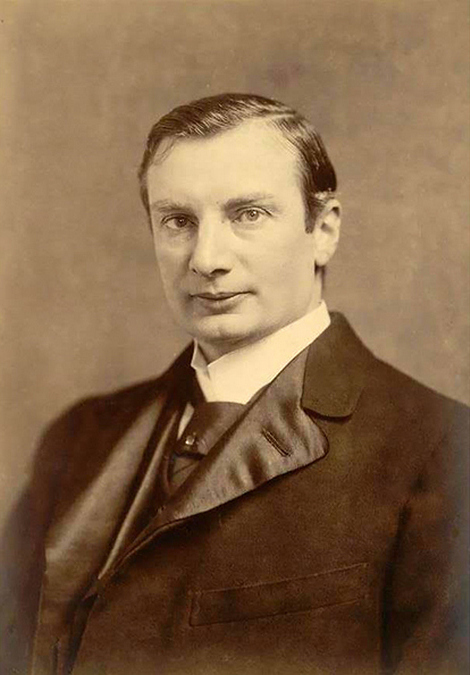

Далеко не всі розуміють, що в несподіваній для багатьох стійкості України при боротьбі з російськими агресорами значну роль відіграла й вітчизняна наука.
******Наші західні доброзичливці, наприклад, щиро дивуються, як швидко українські фахівці освоюють новітнє озброєння, або тому, що ракета українського виробництва може потопити ворожий корабель.
******Не будемо сперечатись відносно талантів, поза всяким сумнівом серед українців їх багато. Але тут йдеться про дещо інше – про рівень інноваційної культури, який складається тільки в тій країні, в якій працює справжня наука.
******Так склалося, що українці не надто багато знають про свою науку. Навряд чи багатьом відомо, наприклад, про те, що в космічній програмі СРСР були задіяні майже всі природничі й технічні інститути НАН України – адже в умовах холодної війни про такі речі не прийнято було повідомляти. Так само, як про багато інших науково-технологічних досягнень світового рівня. Але їхня присутність в нашій країні не могла не впливати на рівень підготовки спеціалістів, взагалі на рівень освіти, на формування у великої кількості людей того комплексу знань, навичок, умінь, які ми тепер називаєм інноваційною культурою.
******Це прекрасно розуміють організатори високотехнологічного бізнесу – не випадково одним із показників, за яким оцінюється готовність країни до інноваційного розвитку, є кількість дослідників, яка припадає на мільйон її населення. Цей показник постійно відслідковує ЮНЕСКО, і його беруть до уваги інвестори, вирішуючи питання, чи доцільно інвестувати в розвиток високотехнологічних виробництв у відповідній країні.
******Щорічно українські вчені створюють близько 15 тис. винаходів. Завдяки їм з’явилися і такі, які зараз активно використовуються в Україні та світі
******22 винаходи українців, які відомі світові
-
1. Гелікоптер
Винахідником гелікоптеру є київський авіаконструктор, який емігрував до США, Ігор Сікорський. У 1931 році він запатентував проект машини з двома пропелерами - горизонтальним на даху і вертикальним на хвості. У вересні 1939-го почалися випробовування гелікоптера VS-300 спочатку на прив’язі, а 13 травня 1940-го конструктор вперше підняв свою машину у вільний політ. Їхній успіх сприяв отриманню першого замовлення від американської армії. Поступово скромна фірма Сікорського перетворилася на потужний концерн, який щороку випускає сотні гвинтокрилів цивільного й військового призначення. Понад півстоліття всі президенти США користуються послугами гелікоптерів Сікорського.
-
2.Гасова лампа
Лампа на основі згоряння гасу була створена львівськими аптекарями Ігнатієм Лукасевичем і Яном Зехом у 1853 році. Одночасно з лампою був винайдений і новий спосіб отримання гасу шляхом дистиляції і очищення нафти.
-
3.Поштовий індекс
У 1932 році в Харкові була створена унікальна система маркування листів. Спочатку в ній використовувалися цифри від 1 до 10, а пізніше формат змінився на число-буква-число. З початком Другої світової війни цю систему індексації скасували, однак пізніше продовжили використовувати в багатьох країнах світу.
-
4.Ракетний двигун і перший супутник Землі
Уродженець Житомира Сергій Корольов є конструктором радянської ракетно-космічної техніки і засновником космонавтики. У 1931 році він разом з колегою Фрідріхом Цандером домоглися створення громадської організації з вивчення реактивного руху, яка згодом стала державною науково-конструкторської лабораторією з розробки ракетних літальних апаратів. У 1957 році Корольов запустив на навколоземну орбіту перший в історії штучний супутник Землі.
-
5.Гнучкий суперконденсатор
Фахівці з Львівської політехніки придумали гнучкий тканинний суперконденсатор, який працює на сонячній батареї і може зарядити навіть мобільний телефон. Пристрій являє собою компактну систему енергозбереження, котра гнеться і кріпиться до будь-якої поверхні. Це український винахід увійшов у топ-100 кращих досліджень і розробок світу 2011 року за версією впливового американського журналу R&D Magazine.
-
6.Годинник-глюкометр для діабетиків
Вчений із Закарпаття Петро Бобонич винайшов глюкометр у вигляді наручного годинника. З його допомогою діабетики можуть дізнаватися рівень цукру в крові в будь-який момент. Для цього не потрібно здавати кров.

-
7.Екологічно чисте паливо
Інженер зі Славутича Володимир Мельников сконструював машину, яка перетворює відходи деревини в паливні брикети. Піч під надвисоким тиском розігріває тирсу до 300 градусів, внаслідок чого утворюється рослинний клей. Далі працює прес, який стискає масу з силою 200 тонн на квадратний сантиметр. В результаті виходить паливний брикет, схожий на антрацит.
-
8.Кінескоп
Йосип Тимченко - людина, яка за два роки до відкриття братів Люм'єр, спільно з фізиком Миколою Любимовим розробив скачковий механізм "равлик". Його принцип дії був покладений в основу створення кінескопа. У 1893 році в Одесі були показані два фільми, знятих за допомогою першого кінескопа. Тимченко випередив західних винахідників кінематографу, однак його пристрій не був запатентований.
-
9.Зварювання живих тканин
Ідея зварювання живих тканин з'явилася серед вчених інституту електрозварювання ім. Євгена Патона. Ще в 1993 році під керівництвом Бориса Патона - сина винахідника різних методів електрозварювання, були проведені експерименти, які довели можливість отримання зварного з'єднання різних м'яких тканин тварин способом біполярної коагуляції. Пізніше почалися експерименти зі зварювання тканин видалених органів людини.
-
10.Рентген
Українець Іван Пулюй за 14 років до німця Вільгельма Рентгена сконструював трубку, яка згодом стала прообразом сучасних рентгенівських апаратів. Він набагато глибше, ніж Рентген, проаналізував природу і механізми виникнення променів, а також на прикладах продемонстрував їх суть. Саме Іван Пулюй першим у світі зробив рентгенівський знімок людського скелета.
-
11.Гіпсова пов'язка
Микола Пирогов - засновник військово-польової хірургії, започаткував використання анастезії при оперативних втручаннях, вперше в історії світової медицини застосував гіпсову пов'язку.
-
12.Вакцини проти чуми та холери
Володимир Хавкін створив перші в історії вакцини проти чуми і холери. Він працював у лабораторії Мечникова спочатку в Одесі, а пізніше в Парижі. У Франції Володимир Хавкін винайшов протихолерну вакцину. Уряд царської Росії відмовився застосовувати винахід політичного противника московської імперії. Після відмови застосовувати протихолерну вакцинацію в ряді країн Європи, Хавкін з 1896 року працював в Індії, де створив першу в історії вакцину проти чуми. Зусилля вченого знайшли підтримку в уряду Великої Британії. Експерименти з винайденими вакцинами Хавкін найчастіше проводив на своєму організмі. В Індії було вакциновано понад 4 мільйонів людей. Видатний вчений був призначений головним бактеріологом країни та директором Бомбейської протичумної лабораторії. Пізніше ця лабораторія була перетворена в Інститут Хавкіна.
 -
13.Місцева імунізація
Олександр Безредка відкрив спосіб місцевої імунізації, створив учення про рецептивні клітини й антивіруси, увів термін — анафілактичний шок. Безредка — автор теорії "місцевого імунітету", яка піддавалась критиці з боку опонентів вченого за його спробу ізолювати явище іммунітету від захисних реакцій організму вцілому.
-
14.Перша пересадка нирки
Юрій Вороний здійснив першу в світі пересадку нирки. Надзвичайно важливо, що в клінічних умовах Вороний довів, що "нирки свіжих трупів у стані оживати і функціонувати при пересадці іншій людині", і що "поза всяким сумнівом трупні органи при пересадці людині не дають якою б то не було специфічної інтоксикації або анафілаксії". Своєю операцією Вороний надовго випередив розвиток трансплантології. У більшості країн світу клінічні пересадки кадаверних нирок почали робити тільки в 50-60-ті роки.
-
15.Безкровний аналіз крові
Харківський вчений Анатолій Малихін придумав, як зробити аналіз крові безкровним. Він створив прилад, п'ять датчиків якого прикріплюються на певні ділянки тіла людини, після чого на екран комп'ютера виводиться 131 показник здоров'я. Прилад активно використовується медиками в Китаї, Саудівській Аравії, Німеччини, Єгипті та Мексиці.
-
16.Антибіотик батумін
Вчені з Інституту мікробіології і вірусології НАН України створили новий антибіотик, що володіє високою активністю до всіх видів стафілококу. За своїм хімічним складом цей препарат не має аналогів.
17.Компакт-диск
Мало хто знає, що прообраз компакт-диска в кінці 1960-х винайшов аспірант Київського інституту кібернетики В'ячеслав Петров. Тоді розробка носила науковий характер і не мала нічого спільного з музикою. Оптичний диск був створений для супер ЕОМ.
-
18.Електричний трамвай
На початку 1870-х полтавчанин Федір Піроцький розробив технологію передачі електроенергії через залізний дріт. У 1880 році Піроцький представив проект застосування електрики "для руху залізничних потягів з подачею струму". Через рік в Берліні поїхав перший трамвай, вироблений компанією Siemens за схемою українця.
-
19.Рукавичка для людей з проблемами зору
Хлопець із Луганська Іван Селезньов представив на міжнародному конкурсі "Intel International Science and Engineering Fair" свій проект "Нове чуття: ультразвукова рукавичка для просторової орієнтації людей з вадами зору". Така річ може стати досить корисною з точки зору орієнтації у просторі. Винахід молодого українця потрапив до трійки кращих винаходів світу у 2013 році.
-
20.Вміння комп'ютера розпізнавати обличчя
Киянину Єгору Анчішкіну було 26 років, коли він зацікавився проблемою розпізнання відео та фотоінформації. Разом з колегами він створив фірму, яка поставила собі за мету навчити комп'ютер впізнавати людські обличчя. Наприклад, розробка українських програмістів могла б швидко знайти горезвісного "караванського стрільця". Але фантастична технологія вже не належить Україні. Інтернет-гігант Google викупив усіх, хто розробляв перспективну технологію.
-
21.Червоні лазери у CD- та DVD-програвачах
Нік Голоняк працював у Головній лабораторії напівпровідників "Дженерал Електрик Компані" у місті Сіракузі (штат Нью-Йорк), де зробив кілька важливих відкриттів у галузі напівпровідникових приладів, серед яких — перший функціональний світловипромінювальний діод і напівпровідниковий лазер. Надзвичайно економічні світлодіоди почали використовувати під час виготовлення фар автомобілів, світлофорів, електронної і побутової техніки, конструювання інформаційних табло на транспортних вузлах, стадіонах тощо. Його винаходи дали змогу розробити червоні лазери, які функціонують у видимому спектрі й використовуються у CD- та DVD-програвачах. Нік Голоняк брав участь у винайденні тріода — пристрою, на базі якого працюють комп’ютери, телевізори й інші сучасні електронні прилади.
-
22.Один з "батьків" Інтернету
Леонард Кляйнрок 1961 року, ще будучи студентом Массачусетського Технологічного Інституту, описав технологію, здатну розбивати файли на частини й передавати їх різноманітними шляхами через мережу. Молодий вчений опублікував свою наукову працю, присвячену цифровим мережевим зв'язкам – "Інформаційний потік у великих комунікаційних мережах". Ці ідеї лягли в основу його докторської дисертації, висновки з якої він опублікував у виданні "Комунікаційні мережі" (1964). У цій книжці Л.Кляйнрок виклав основні принципи (разом з його наступними теоретичними розробками) пакетної комунікації, які лежать в основі сучасної технології Інтернету. Ідеї Кляйнрока випереджали час, тому знайшли своє широке застосування лише в кінці 60-х років XX століття, коли ними зацікавилось Агентство з науково-дослідних проектів (ARPA), одним з напрямків діяльності якого стало створення комп'ютерних технологій для військових цілей, зокрема, зв'язку.
Швидка навігація по сторінці
- 1. Гелікоптер
- 2.Гасова лампа
- 3.Поштовий індекс
- 4.Ракетний двигун і перший супутник Землі
- 5.Гнучкий суперконденсатор
- 6.Годинник-глюкометр для діабетиків
- 7.Екологічно чисте паливо
- 8.Кінескоп
- 9.Зварювання живих тканин
- 10.Рентген
- 11.Гіпсова пов'язка
- 12.Вакцини проти чуми та холери
- 13.Місцева імунізація
- 14.Перша пересадка нирки
- 15.Безкровний аналіз крові
- 16.Антибіотик батумін
- 17.Компакт-диск
- 18.Електричний трамвай
- 19.Рукавичка для людей з проблемами зору
- 20.Вміння комп'ютера розпізнавати обличчя
- 21.Червоні лазери у CD- та DVD-програвачах
- 22.Один з "батьків" Інтернету